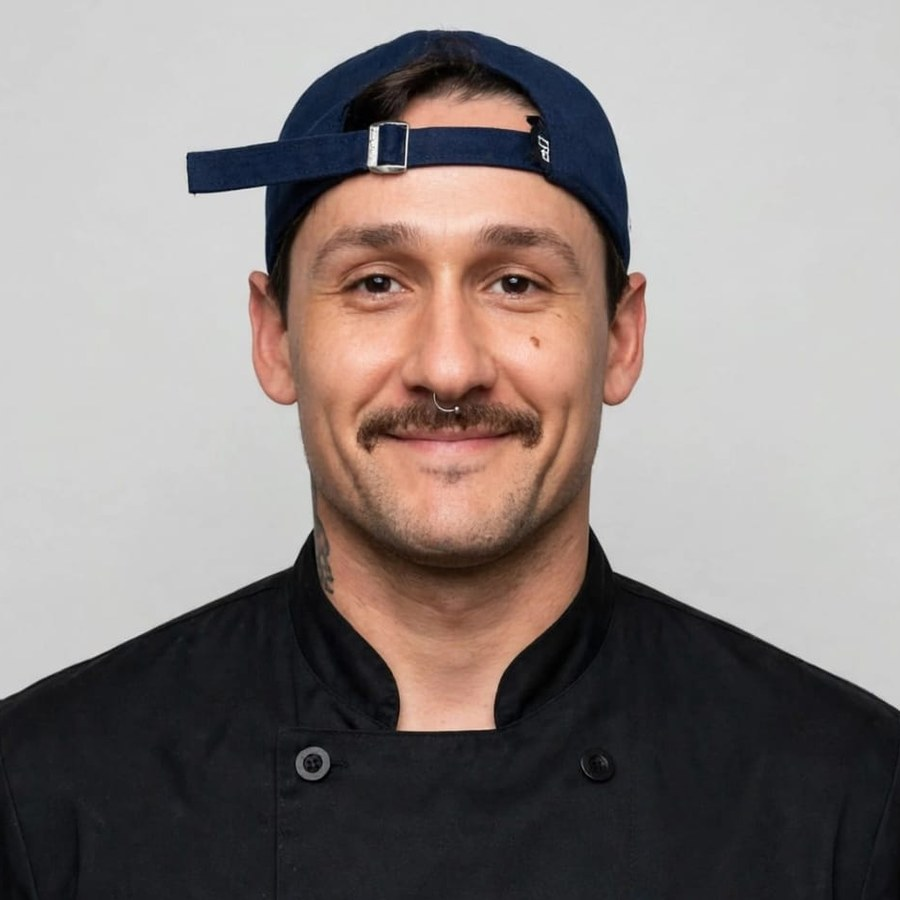

01
Panificación artesanal
Fermentación en frío de 48 horas: focaccia, panes clásicos, integrales en varias versiones y pan de hamburguesa.

Más de 15 años en cocinas de Entre Ríos y Santa Fe. Producción, panificación artesanal y emprendimiento propio.
Jefe de cocina con más de 15 años de trayectoria en gastronomía, con experiencia en cafés y restaurantes de Entre Ríos y Santa Fe. Especializado en producción, gestión de plancha y control de stock, con dominio de panificación artesanal, pizza estilo napolitano, cocina asiática y cocciones lentas. Desde 2022 dirige Viandas de Raíz, su propio emprendimiento de comida saludable, panificación con fermentación en frío y catering para eventos.
Fermentación en frío de 48 horas: focaccia, panes clásicos, integrales en varias versiones y pan de hamburguesa.
Pizza estilo Nápoles de fermentación en frío, además de pizzas listas para el freezer.
Producción de hamburguesas y panes de hamburguesa artesanales, con manejo de plancha y de stock.
Baos, wok y gyozas, desde la carta de Río Nuevo Café hasta su propio emprendimiento.
Perniles y bondiolas con panes y salsas, y comida casera al disco.
Ensaladas completas, poke bowls y medallones de legumbres.
Comida saludable, panificación con fermentación en frío de 48 horas y catering para eventos. Detalle de la propuesta más abajo.
Despacho de platos elaborados, comida asiática (baos, wok) y sándwiches de autor. Producción y control de stock.
A cargo de la producción de hamburguesas artesanales y de los panes de hamburguesa artesanales. Manejo de plancha y de stock.
Despacho de minutas y fritero. Producción y control de stock.
Despacho de sándwiches, minutas, picadas y pizzas. Producción y control de stock.
A cargo de la producción, el despacho de plancha, platos elaborados y pastas. Control de stock.
Comida saludable, panificación con fermentación en frío de 48 horas y catering para eventos.
Para propuestas de trabajo, catering o encargos.